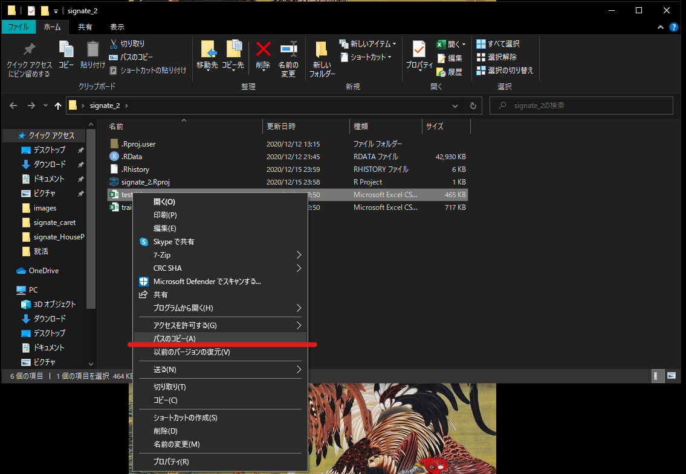
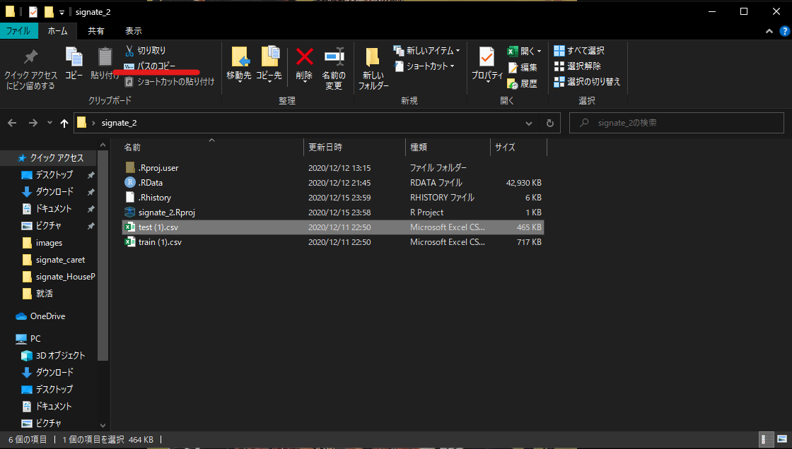

Chapter 4 Dataの読み込み
4.1 EXCELファイルの読み込み（パッケージインストール）
.xlsx形式のファイル（EXCELのファイル）をRで読み込むには、専用のパッケージを使用する必要があります。
いくつか選択肢はありますが、私のおすすめは「readxl」です。
4.2 readxlのインストールと読み込み
install.packages("readxl")library(readxl)4.3 EXCELファイルの読み込み(実行)
readxlを使用する準備が出来たので、ファイルを読み込みましょう。
read_excel(path, sheet = 1, col_names = TRUE)上のスクリプトを実行するとEXCELファイルが読み込めます。必ずpathは入力してください。
その他はオプションです。必要であれば入力してください。
- path
- 読み込みたいEXCELファイルのpathを入力します。pathとはファイルの住所のようなものです。下で詳しく説明します。EXCELファイルをRの作業ディレクトリに入れておけばpathではなくファイル名だけで読み込みできます。
- sheet
- EXCELファイルにシートが複数ある場合、読み込むシートを指定しなければなりません。
sheet =の後に シート名かシート番号を入力してください。
- EXCELファイルにシートが複数ある場合、読み込むシートを指定しなければなりません。
- col_names
- 列名の読み込み方を決定します。
col_names =の後ろにTRUEかFALSEを入力します。TRUEは1行目を列名とします。FALSE は 列名をX1，X2，…とします。デフォルトはTRUEです。
- 列名の読み込み方を決定します。
4.4 pathとは
pathとはファイルやフォルダの所在を表す文字列です。pathを取得するには、pathを知りたいファイルをエクスプローラーで開き、そのファイルをshiftを押しながら右クリックすると下のように表示されます

赤線の部分をクリックすることでpathのコピーが可能です。

ここからコピーすることもできます。
実際にペーストすると下のようになります。
Data <- read_excel("C:\Users\kyo41\Desktop\エクセル.xlsx")しかしこのままではエラーが発生します。
pathをこのように書き換えます。
Data <- read_excel("C:/Users/kyo41/Desktop/エクセル.xlsx")スラッシュの向きを反対にすることでファイルを読み込むことができました。
4.5 CSV,TSVファイルの読み込み
CSVやTSVなど頻繁に使われるファイル形式については、それぞれread_csv() 、 read_tsv()という専用の関数が用意されています。
read_csv("C:/Users/kyo41/Desktop/CSV.csv")
read_tsv("C:/Users/kyo41/Desktop/TSV.tsv")